1. 登陆新的服务器
1. 开启VPN
电脑版 VPN 客户端 MotionPro 安装使用说明 1、Windows 操作系统 1.1 打开网址：https://client.arraynetworks.com.cn:8080/zh/troubleshooting 根据 Windows 操作系统的位数下载对应 MotionPro 客户端软件。
安装之后
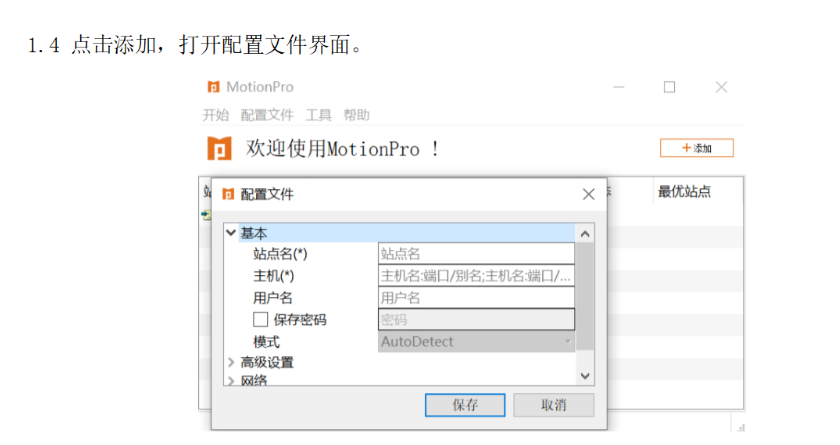
使用这个vpn账号：
2. 登陆堡垒机
https://192.168.144.55/login
网站登录的账号密码：
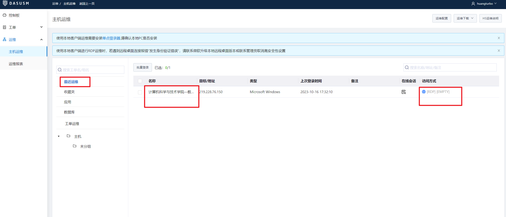
3. 运维登陆
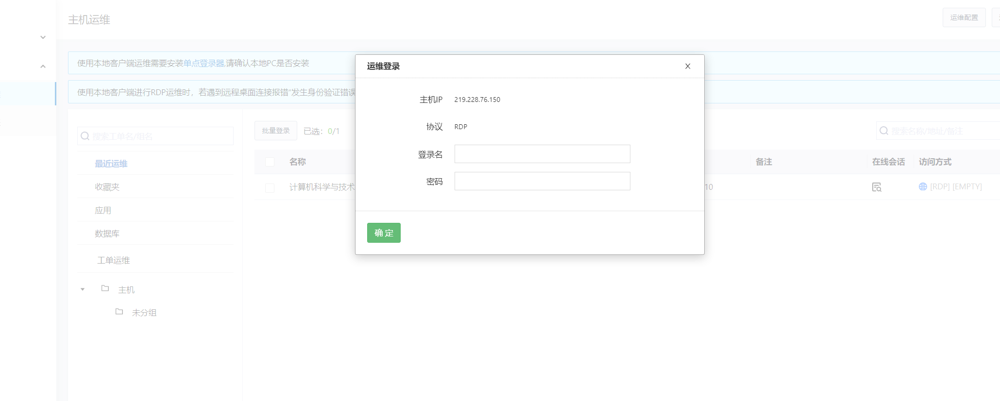
4. 登陆服务器
5. ==应用安装注意事项：==
windows：请将应用和数据安装存放在在E盘；如申请了备份空间，请将备份数据存放到Z盘
2. 安装必备的软件和工具
win server 2019
1. 安装jdk 1.8
1. 下载安装包，从qq邮箱传输
2. 安装jdk
感觉不太爽，重新安装一下！
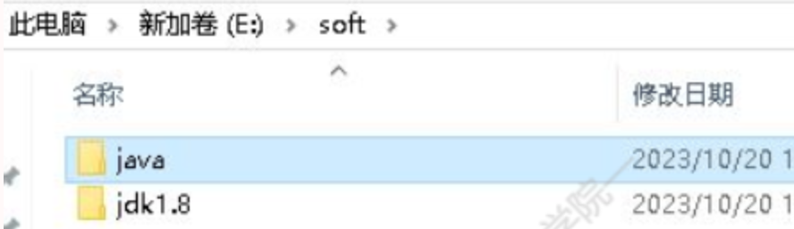
3. 配置环境变量
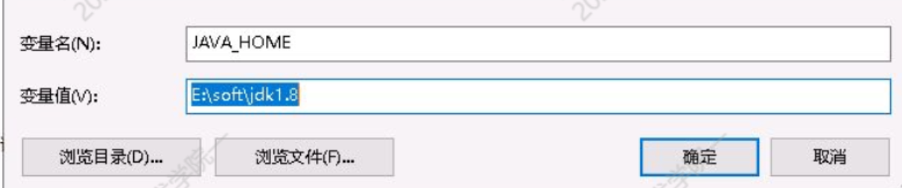
- 系统变量-path
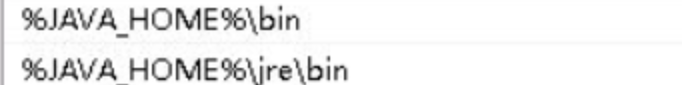
- .;%JAVA_HOME%\lib;%JAVA_HOME%\lib\dt.jar;%JAVA_HOME%\lib\tools.jar
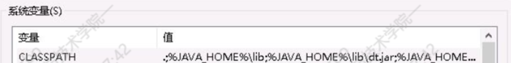
4. 验证成功
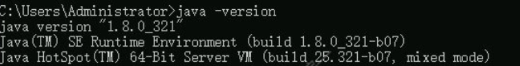
2. 安装mysql
参考：https://blog.csdn.net/NOWSHUT/article/details/107722623
1. 下载mysql-windows安装包
https://dev.mysql.com/downloads/mysql/
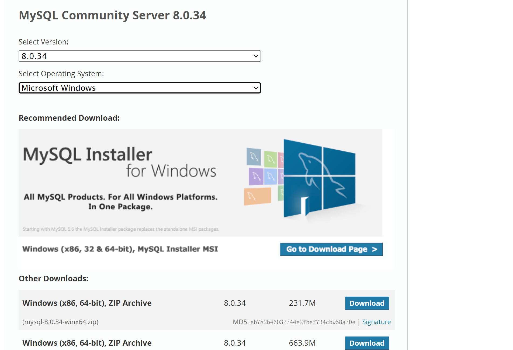
2. 安装步骤
需下载360国际版压缩。
3. 配置环境变量
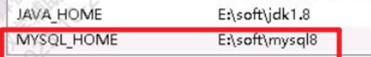
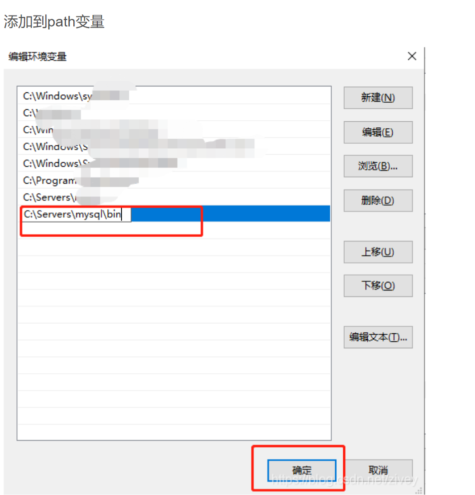
4. 创建mysql配置文件my.ini
在mysql跟目录下创建文件名为my.ini的配置文件，打开my.ini，添加以下内容
[mysqld]
# 设置3306端口
port=3306
# 设置mysql的安装目录
basedir=C:\Servers\mysql
# 设置mysql数据库的数据的存放目录
datadir=C:\Servers\mysql\data
# 允许最大连接数
max_connections=200
# 允许连接失败的次数。
max_connect_errors=10
# 服务端使用的字符集默认为utf8mb4
character-set-server=utf8mb4
# 创建新表时将使用的默认存储引擎
default-storage-engine=INNODB
# 默认使用“mysql_native_password”插件认证
#mysql_native_password
default_authentication_plugin=mysql_native_password
[mysql]
# 设置mysql客户端默认字符集
default-character-set=utf8mb4
[client]
# 设置mysql客户端连接服务端时默认使用的端口
port=3306
default-character-set=utf8mb4
5. 安装VC++ 14 运行时文件，已经安装过了
在最下面的其他工具和框架里找VC++的可再发行包。
直达下载地址：https://aka.ms/vs/16/release/VC_redist.x64.exe
下载后运行安装即可。
6. 初始化mysql
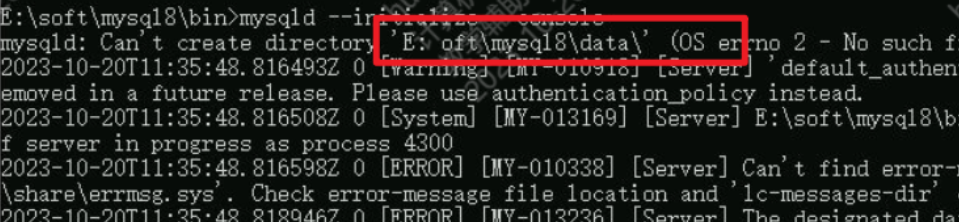
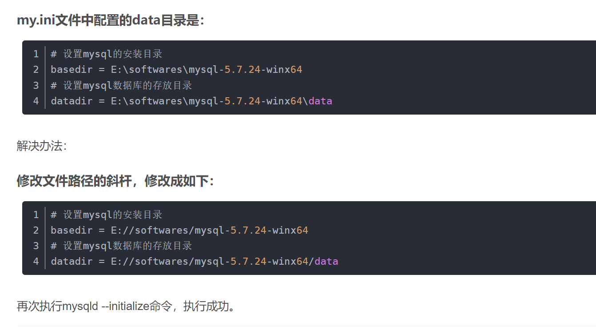
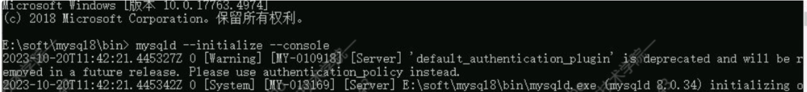
其中提示了初始密码：XXXX
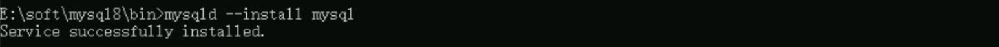
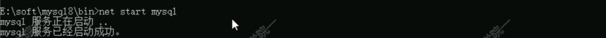
7. 启动mysql
进入mysql 控制台
在mysql 控制台下运行修改密码的sql语句
ALTER USER ‘root’@’localhost’ IDENTIFIED WITH mysql_native_password BY ‘Your new password’;
但是我没有修改！
8. 开启远程访问权限（也没有搞，感觉有需要再搞）
在cmd中使用mysql -u root -p命令，进入mysql控制台
在mysql 控制台下输入 use mysql 切换到内置mysql数据库
运行 select User,authentication_string,Host from user;
以上sql 语句查询当前用户的Host权限，root用户的权限是localhost
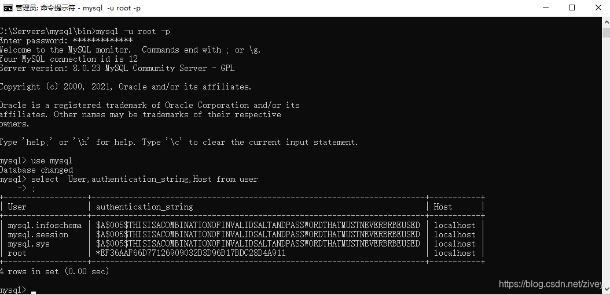
运行sql语句，为root用户授权所有远程计算机访问权限
update user set host=’%’ where user =‘root’;
继续运行sql语句，刷新权限设置
flush privileges;
此时应该已经能够远程访问你的数据库了
最后运行sql语句
GRANT ALL PRIVILEGES ON . TO ‘root’@’%‘WITH GRANT OPTION;
正式授权远程访问权限。
完成！
3. 安装navicat（只有这个不需要关闭联网）
1. 下载安装软件
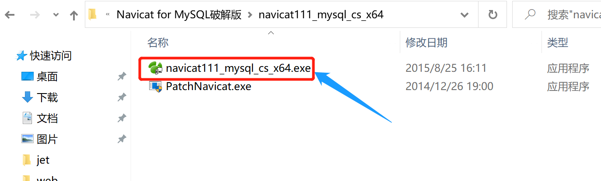
2. 安装
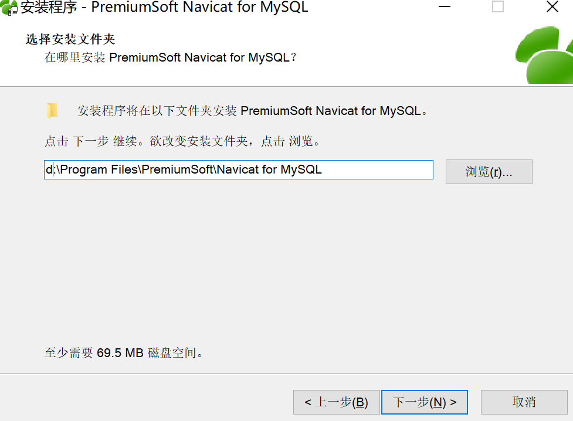
3. 运行免注册插件
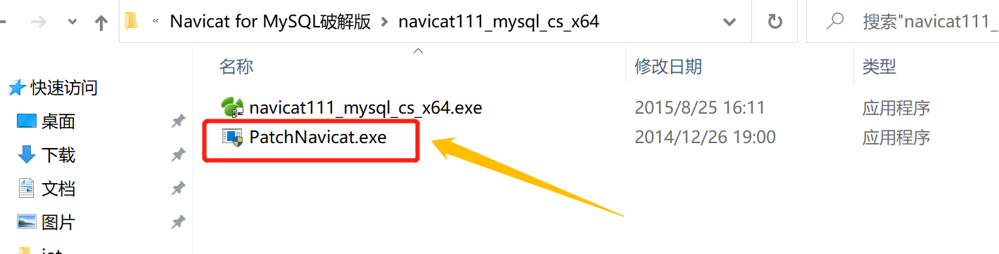
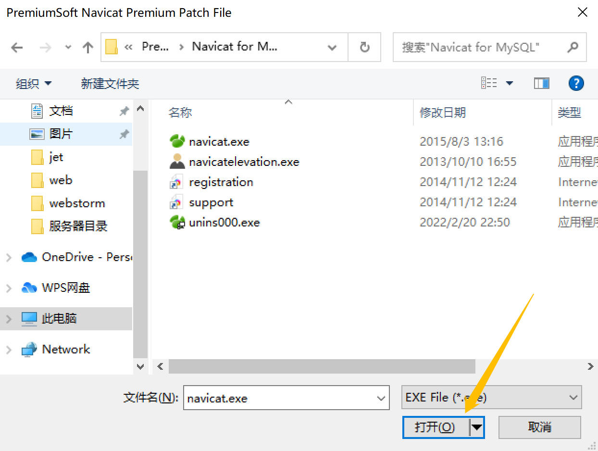
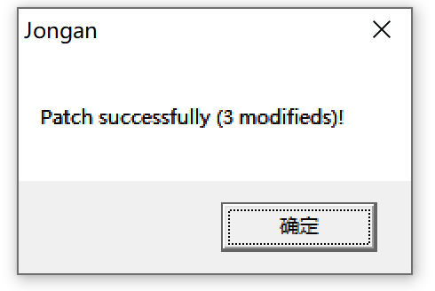
3. 开始部署
1. 服务器地址
2. navicat新建数据库
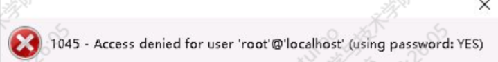
太酷拉
1. try 1
skip-grant-tables
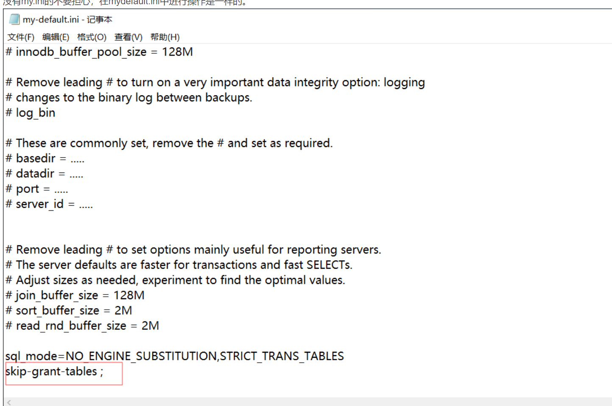
停止：输入
net stop mysql启动：输入
net start mysqlmysqk
2. try …
3. 修改密码——成功
net stop mysql
net start mysql
mysql -u root -p
修改密码
3. 一系列文件通过邮件上传并移动到指定位置
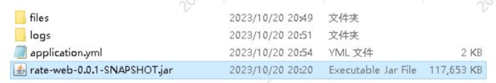
4. everything is okay except 8080
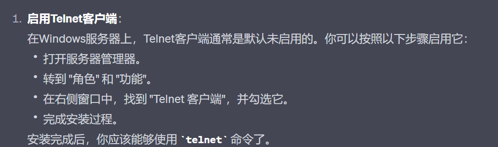
算了，先试试这个
Test-NetConnection -ComputerName 219.228.76.150 -Port 8080
telnet 219.228.76.150 8080